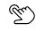

I am happy to code with html since I am being taught
by teacher ALPHONSE
This is amazing!
I am able to create web pages links
For examples this is what I have created:
HTML LINKS
- use: ol tag for ordered list
- use: ul tag for unordered list
- use: li tag for lists
HTML UNORDERD LINKS
- use: ol tag for ordered list
- use: ul tag for ordered list
- use: li tag for lists
